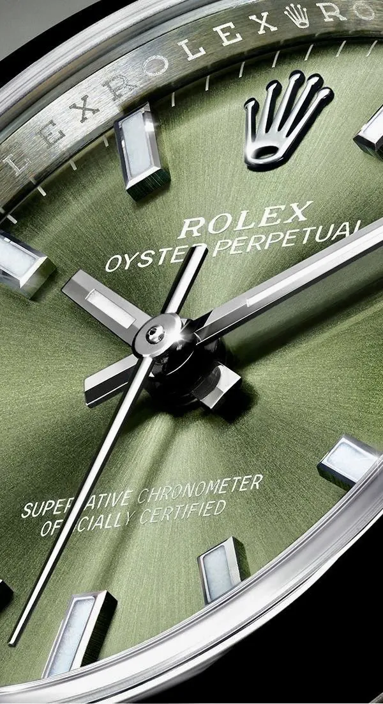
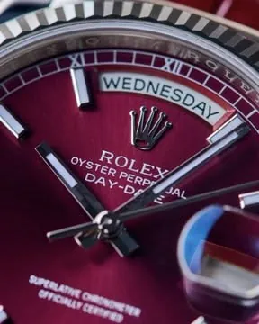
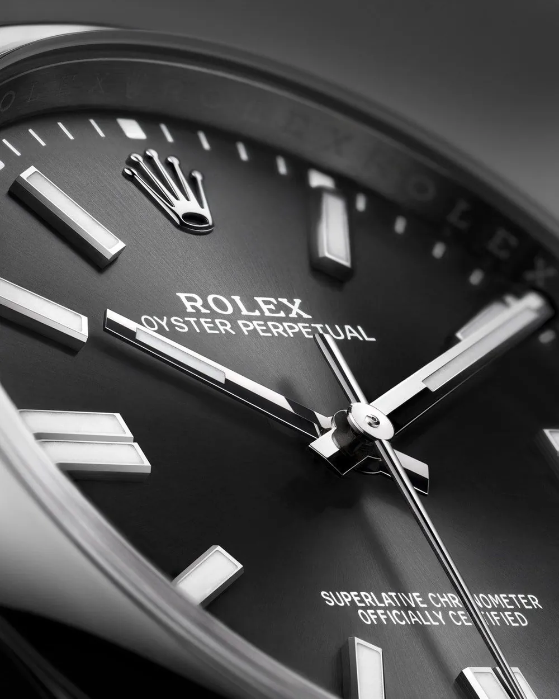

The Art of Making
The AURELIAN Process
Our Philosophy
Where Science Meets Art
Every AURELIAN watch is a testament to the art of fine watchmaking. From the selection of raw materials to the final quality control, each step of the manufacturing process reflects our uncompromising pursuit of excellence.

Movement
In-House Movements
Every AURELIAN movement is designed, developed, and manufactured entirely in-house. This complete integration of the production process ensures uncompromising quality at every stage of the watchmaking process.

Materials
Aurasteel Mastery
AURELIAN uses its own exclusive alloy — Aurasteel — a high-chromium steel developed in our atelier. Highly resistant to corrosion, it acquires a remarkable sheen when polished.

Precision
Precision Certified
Every AURELIAN watch is tested over fifteen days and certified accurate to -3/+3 seconds per day — a standard that goes far beyond common industry requirements.

Innovation
Aurum Rotor
Our self-winding mechanism with the Aurum rotor, introduced in 1952, transformed our watchmaking. It winds the mainspring continuously through the natural motion of the wearer's wrist.
Parts Per Watch
Hours Power Reserve
Years of Innovation
Metres Waterproof
Perfection is not an accident. It is the result of relentless dedication to every detail, no matter how small.